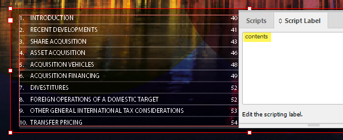
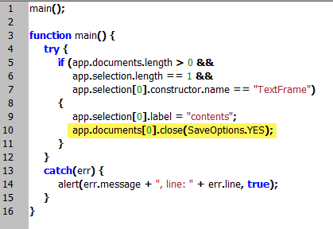
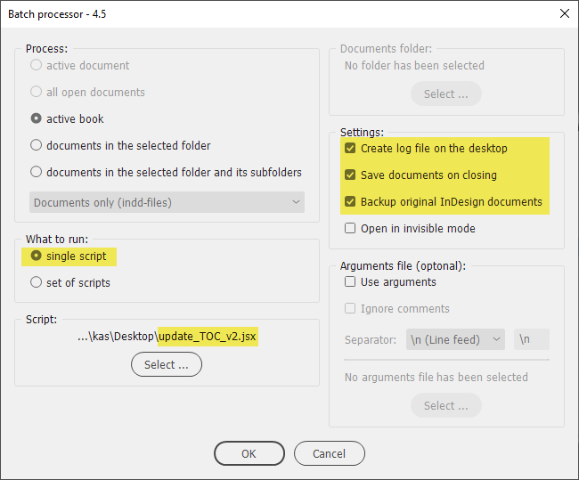

Batch update table of contents
This script is for the batch processor only and was written on the following request:
This is my problem:
I have an InDesign book of 72 chapters. Each chapter is a separate InDesign file and each one has its own Table of Contents. I was looking for a script that I could run once that would update all 72 chapters of the book in one go. The javascript sample I attached was supposed to do that but I couldn’t get it to work (not being a scripter).
It is a two steps process.
Step 1
First, use the label contents.jsx script to label the text frames with contents:

Install the script and assign a shortcut. Then open each document in the book/folder, select the frame containing the Tables of Contents, and hit the shortcut. The script will assign the ‘contents’ label, save, and close the document. You can do this manually, of course, but it will take a little longer.
If you don’t want to save and close the document, remove or out-comment the following line:

Step 2
Run the update_TOC_v2.jsx script from the batch processor with the following (recommended) parameters:

Click here to download both scripts.
See also:
Batch-update Tables of Contents by Marc Autret